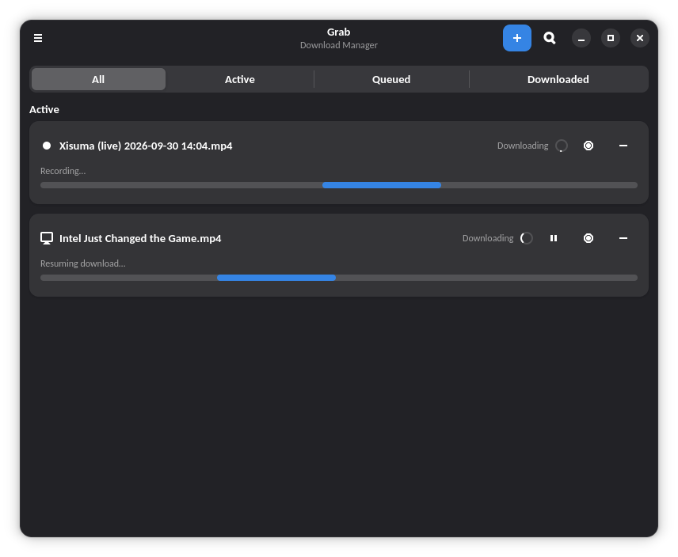
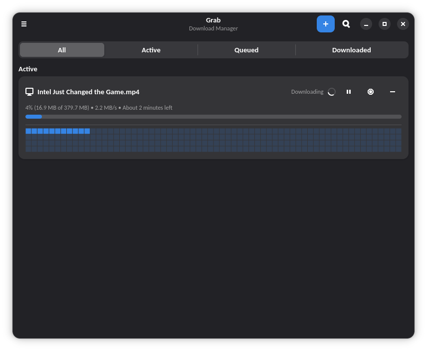
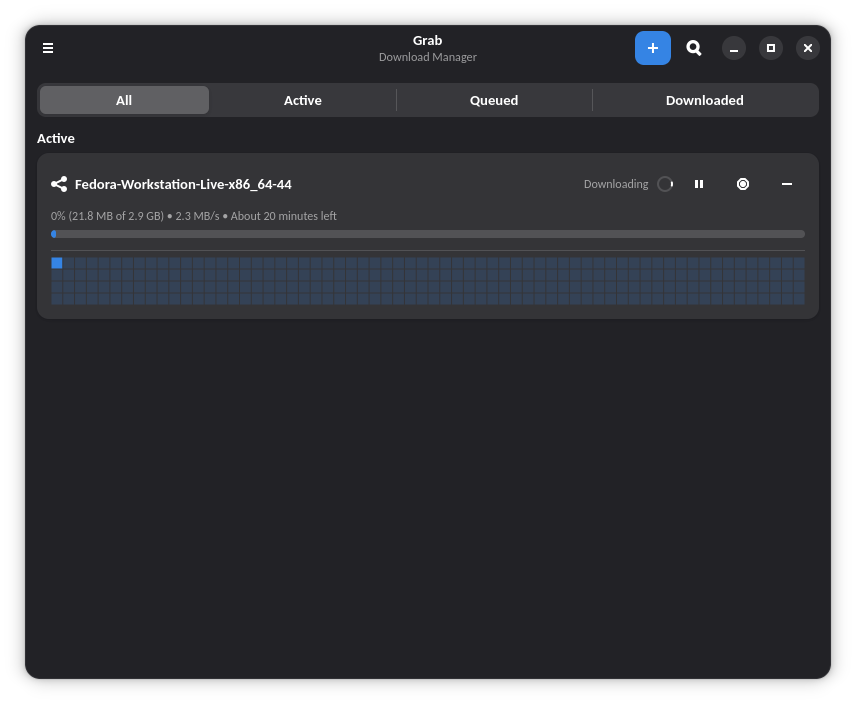
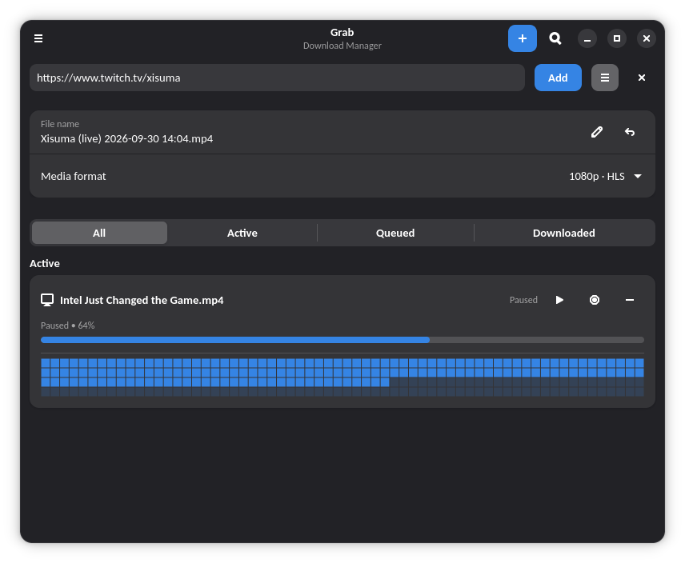

Fast file downloads
Make the most of your connection, pause when needed, and pick up where you left off.
A download manager for GNOME
Files, videos, galleries, torrents, and live streams — brought together in one focused app.

Made to do more
Keep everyday downloads, online media, and live recordings together without juggling separate tools.
Make the most of your connection, pause when needed, and pick up where you left off.
Save media from supported websites and choose the quality or format that suits you.
Add a magnet link or torrent file, select the content you want, and manage seeding.
Record streams while they are broadcasting and keep them with the rest of your downloads.
Send links and downloads from Firefox and Chromium-based browsers straight to Grab.
A familiar, keyboard-friendly desktop app that stays focused on your downloads.
A closer look
Real screenshots of downloads, torrents, and the media picker.



Ready when you are
Get Grab from FlatPark or browse the latest release.
Want browser integration? Get the Grab extension for Firefox and Chromium-based browsers.